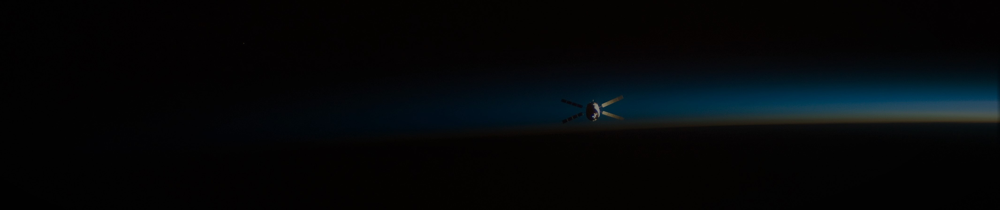
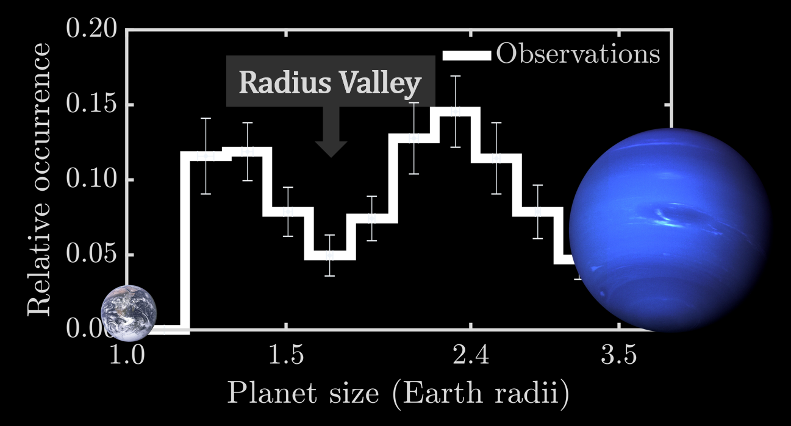
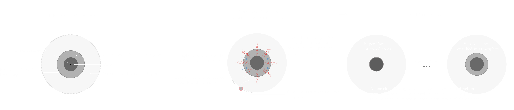
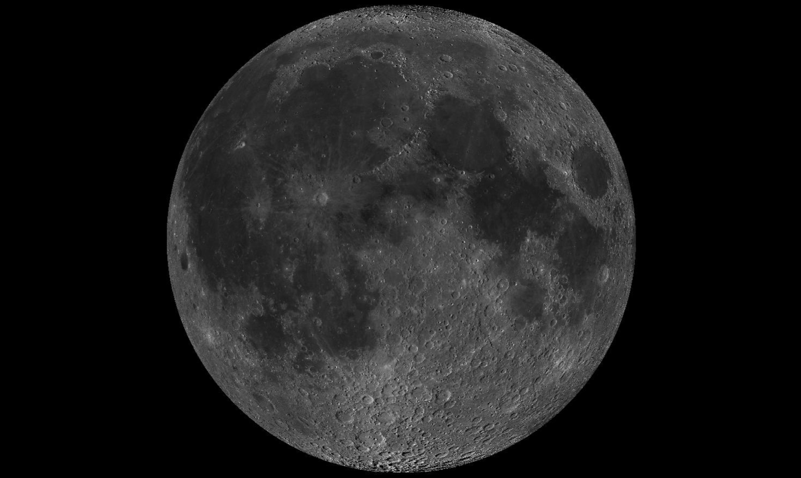
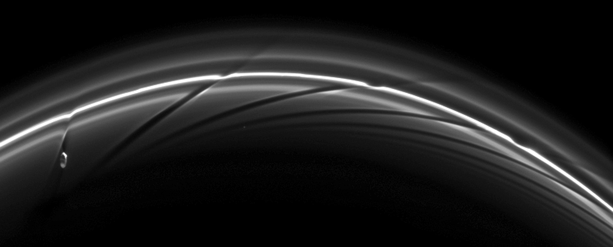
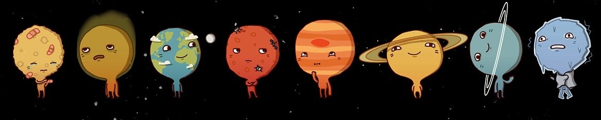

In 2016, I graduated from the Indian Institute of Technology (IIT), Kanpur
with a Bachelor's and Master's (Dual degree) in Aerospace Engineering. For my Master's thesis, I worked on the dynamics of rings around non-spherical bodies under the supervision of
Dr. Ishan Sharma and Dr. Sharvari Nadkarni-Ghosh.
Furthermore, during my stay at IIT Kanpur I worked on projects encompassing planetary rings, orbital dynamics, N-body simulations, kinetic/granular theory and building Formula prototype cars.
Research

My general research interests revolve around the formation, evolution, interiors and dynamics of planetary bodies (extra-solar and solar).
My present and past research projects can be classified under the following broad categories:
Formation and evolution of small exoplanets
Dynamics, impacts and craters
Planetary ring dynamics: theory and numerical simulations
Radius valley as a by-product of planet formation via the core-powered mass-loss mechanism

Figure 1. Radius valley in the distribution of small, close-in planets separating populations of super-Earths and sub-Neptunes.
Plot based on data from Fulton et al. 2017.
Observations have revealed a radius valley, i.e., a lack of planets around 1.5-2.0 Earth radii, in the size distribution of small, short-period exoplanets.
Typically, planetary atmospheric erosion due to high-energy radiation from the host stars, i.e., photoevaporation, is suggested as an explanation to these observations.
However, recently Ginzburg et al. 2018 and we (Gupta & Schlichting, 2019a) demonstrated that atmospheric loss due to a planet's own cooling luminosity, i.e., core-powered mass-loss,
can lead to the observed radius valley, even without photoevaporation.
Furthermore, we find that planetary evolution under this mechanism can explain a multitude of trends observed in the planet size distribution
with orbital period and stellar mass, metallicity and age (Gupta & Schlichting, 2019b).

Figure 2. Schematic demonstrating how the core-powered mass-loss mechanism results in the radius valley, and super-Earths and sub-Neptunes. See Gupta & Schlichting, 2019 for details.
It is likely that both core-powered mass-loss and photoevaporation have been active in sculpting the planet distribution observed today, nevertheless,
our work shows that the valley in the size distribution of exoplanets is an inevitable by-product of the planetary formation process.
With my group at UCLA (Dr. Hilke Schlichting and Will Misener)
and our collaborators, I have been trying to understand the origin of super-Earths and sub-Neptunes.
To know more, please refer:
Gupta & Schlichting, 2019b. In review. arXiv:1907.03732. [ADS] [arXiv]
Gupta & Schlichting, 2019a. MNRAS 487, 24-33. [ADS] [arXiv]
Dynamics, Impacts & Craters: Asymmetry in the distribution of Lunar Cold-spots

Figure 3. The cratered surface of the moon. Image credit: Lunar Reconnaissance Orbiter.
Rings around small, non-spherical planetary bodies
Figure 4. Artistic rendition of the triaxial shaped dwarf planet Haumea with its surrounding ring.
Image credit: Wikipedia user 'Tomruen'.
For years, we have known of the rings around the giant planets of our Solar System.
Rings are also expected to exist around extrasolar planets but have not been detected so far.
However, what was not expected was the existence of rings around much smaller, non-spherical bodies of our Solar System.
This changed in 2014 with the discovery of rings around a small body named Chariklo, followed by another discovery in 2017, of rings around the dwarf planet, Haumea.
These discoveries suggest that the ring systems are much more common in our Solar System than previously thought,
and their existence has challenged our understanding of their evolution and formation.
In collaboration with my former group
from IIT Kanpur (Dr. Ishan Sharma, Dr. Sharvari Nadkarni-Ghosh, Shri B. Bharath and others), I have been trying to understand the dynamics
of rings around non-spherical bodies through N-body simulations and by developing a kinetic theory prescription.
To know more, please refer:
Gupta, A., Nadkarni-Ghosh, S. & Sharma, I., 2018. Icarus 299, 97-116. [ADS][arXiv]
Saturn's F-ring: dynamics under aggregate formation and disruption

Figure 5. Cassini image shows Saturn's potato-shaped moon, Prometheus, dynamically and physically interacting with the F-ring.
Image credit: NASA/JPL/Space Science Institute.
...
Miscellaneous Projects
...
Contact

If you have any questions or comments regarding my work and publications or would like to collaborate, please do get in touch. I’d really like to hear from you!
Room 4642, Geology Building
Department of Earth, Planetary, and Space Sciences
University of California, Los Angeles
595 Charles Young Drive East,
Los Angeles, CA 90095-1567, USA.